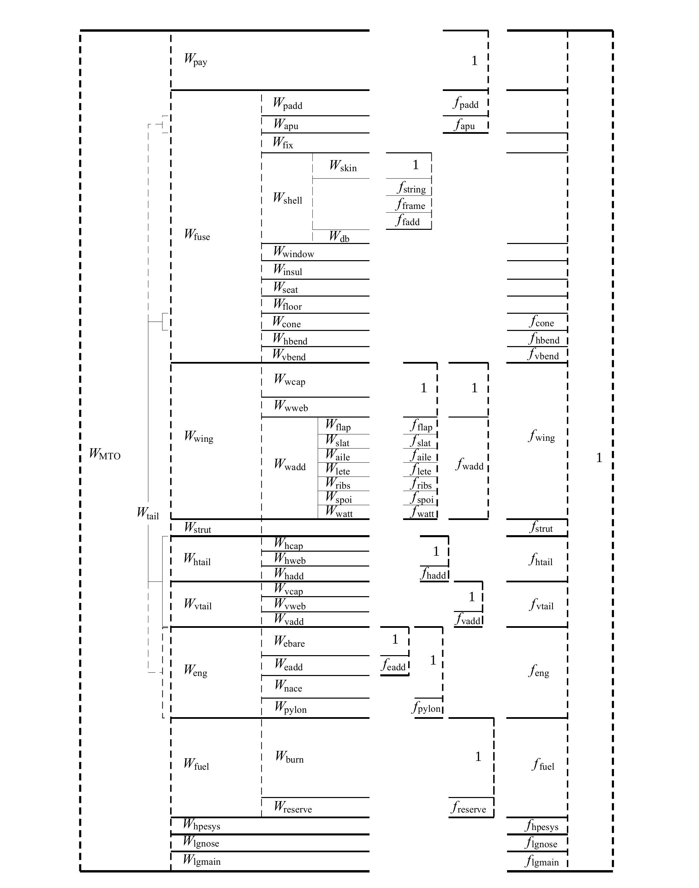

TASOPT Weight Model
Overall Weight Breakdown
In calculating the weight models, TASOPT combines:
- Fundamental, physics-based structural models for the primary structures (fuselage, wing, tail), sized by specified load factors and material properties.
- Empirically derived fractional weights (for items such as seats, furnishings, equipment, etc.) that scale with either payload or primary structure area/weight.

As shown in the figure above, each component in the aircraft can be divided into sub-weights, some of which are explicitly derived from geometry and stress analyses, and others that are assigned via fractional or fixed scaling. Altogether the overall flying weight of the aircraft is:
\[\begin{aligned} W &=\;r_{\rm pay}\,W_{\rm pay} \;+\;r_{\rm fuel}\,W_{\rm fuel} \;+\;W_{\rm fuse} \;+\;W_{\rm wing} \;+\;W_{\rm strut} \;+\;W_{\rm htail} \;+\;W_{\rm vtail}\\ &\quad+\;W_{\rm eng} \;+\;W_{\rm hpesys} \;+\;W_{\rm lgnose} \;+\;W_{\rm lgmain}. \end{aligned}\]
where $r_{\mathrm{pay}}$ and $r_{\mathrm{fuel}}$ can range from 0 to 1 to represent partial loads.
Fuselage Weight
📖 Theory - Fuselage Weight Calculation
The fuselage structural weight is calculated using:
- Pressure shell modeling
- Bending loads
- Secondary items (Seats, and other interior equipment).
These fuselage-related weights (shell, floor beams, tail cone, added bending material, etc.) plus passenger-proportional items are summed to get the total fuselage weight, expressed mathematically as:
\[\begin{aligned} W_{\rm fuse} &= \, W_{\rm fix}\:+\: W_{\rm apu}\:+\: W_{\rm padd}\:+\: W_{\rm seat} \nonumber \\ & + \; W_{\rm shell}\:+\: W_{\rm cone}\:+\: W_{\rm window}\:+\: W_{\rm insul}\:+\: W_{\rm floor} \nonumber \\ & +\; W_{\rm hbend}\:+\: W_{\rm vbend} \end{aligned}\]
where $W_{\rm fix}$ is a fixed weight (cockpit, instruments, etc.), $W_{\rm apu}$,$W_{\rm seat}$, $W_{\rm padd}$ scale with passenger payload or seating capacity, $W_{\rm shell}$, $W_{\rm cone}$, $W_{\rm floor}$ come from explicit structural and geometric modeling (pressurization, bending, torsion), and $W_{\rm hbend}$, $W_{\rm vbend}$ represent added fuselage skin/stringer material for horizontal and vertical bending loads.
Wing Weight
📖 Theory - Wing Weight Calculation
TASOPT’s wing weight model first computes the primary wingbox weight via beam theory, sizing spar caps and webs to meet bending and shear stress limits under specified load factors. Each panel (inner and outer) is integrated for structural volume, as well as for maximum possible fuel volume. Secondary elements (leading and trailing-edge devices, ribs, flaps, spoilers, etc.) are included through empirical fraction multipliers on the primary structure.
The total wing structural weight is:
\[\begin{aligned} W_{\rm wing} &= \, 2 \,\bigl(\,W_{\mathrm{s,\,cen}} + W_{\mathrm{s,\,inn}} + W_{\mathrm{s,\,out}}\bigr)\bigl(1 + f_{\mathrm{w\,add}}\bigr) \end{aligned}\]
where $W_{\mathrm{s,\,cen}}$, $W_{\mathrm{s,\,inn}}$, and $W_{\mathrm{s,\,out}}$ are the structural weights of the center, inner, and outer wing panels, respectively, and $f_{\mathrm{w\,add}}$ is the sum of fractional add-ons (flaps, slats, ailerons, etc.).
Tail Weight
Both horizontal and vertical tails are sized much like a small wing:
- Each tail’s planform is analyzed for maximum tail-load conditions (e.g., at never-exceed dynamic pressure).
- Spars and skins are sized with the same beam-type approach.
- The final tail weight sums with the fuselage to include the tail cone, sometimes lumped into a single “rear mass” for bending load computations.
Engine Weight
There are currently two options for engine weight models in TASOPT. The Drela engine model or Fitzgerald's engine model (Section 2.10 of the TASOPT Technical Desc).
Drela Engine Model
The bare weight function has been calibrated with listed weights for existing turbofans, as described in the document Turbofan Weight Model from Historical Data. The bare engine weight $W_{\mathrm{e,\,bare}}$ scales with turbofan design parameters (mass flow, overall pressure ratio, bypass ratio). Added fractions for accessories, fuel systems, and pylons yield the overall engine system weight:
\[\begin{aligned} W_{\rm bare} &=\; n_{\rm eng}\,W_{e_1}\!\bigl(\dot{m}_D,\; OPR_D,\;BPR_D\bigr),\\[6pt] W_{\rm add} &=\; W_{\rm bare}\,f_{\rm eadd},\\[6pt] W_{\rm pylon} &=\;\bigl(W_{\rm bare} + W_{\rm add} + W_{\rm nace}\bigr)\,f_{\rm pylon},\\[6pt] W_{\rm eng} &=\; W_{\rm bare} + W_{\rm add} + W_{\rm nace} + W_{\rm pylon} \end{aligned}\]
Here, $W_{\rm bare}$ is determined by the core flow correlation; $W_{\rm add}$ is an empirical fraction of $W_{\rm bare}$; $W_{\rm nace}$ is the nacelle + thrust reverser weight (based on fan diameter, length, etc.), and $W_{\rm pylon}$ accounts for the engine mounting structure.
Fitzgerald Engine Model
This engine weight model is based on a correlation for bare engine weight as a function of overall pressure ratio, bypass ratio, and core mass flow. There are options to use the basic as well as advanced model.
In the basic model four bare engine weight correlations are based on data from NPSS/WATE++. It has the ability to model a direct-drive turbofan or a geared turbofan. The nacelle, pylon, and additional weights are calculated as functions of bare engine weight and fan diameter and then summed to find the total engine weight as given in the equation below:
\[\begin{aligned} W_{\rm eng} &=\; W_{\rm bare} + W_{\rm add} + W_{\rm nace} + W_{\rm pylon} \end{aligned}\]
The advanced model uses the weight correlations from NPSS/WATE++ as well but features separate surrogate models for the core, fan, combustor, nozzle and nacelle weights:
\[\begin{aligned} W_{\rm eng} &=\; W_{\rm core} + W_{\rm fan} + W_{\rm comb} + W_{\rm nozz} + W_{\rm nace} + W_{\rm pylon} \end{aligned}\]
Empirical Weight Fractions
Many aircraft components are assumed to scale linearly with related weights. For example:
\[\begin{aligned} W_{\rm APU} = f_{\rm APU} W_{\rm payload} = 0.035 \times W_{\rm payload} \end{aligned}\]
The default values for these empirical weight fractions ($f$) are:
| Weight | Components | Default $f$ | Scaling Weight |
|---|---|---|---|
| $W_{\rm hpesys}$ | High-Pressure and Electrical Systems | 0.010 | $W_{\rm MTO}$ |
| $W_{\rm lgmain}$ | Landing Gear (main) | 0.044 | $W_{\rm MTO}$ |
| $W_{\rm lgnose}$ | Landing Gear (nose) | 0.011 | $W_{\rm MTO}$ |
| $W_{\rm APU}$ | APU | 0.035 | $W_{\rm payload}$ |
| $W_{\rm seat}$ | Seat | 0.1 | $W_{\rm payload}$ |
| $W_{\rm padd}$ | Added Payload | 0.35 | $W_{\rm payload}$ |
| $W_{\rm flap}$ | Wing Flaps | 0.2 | $W_{\rm wing}$ |
| $W_{\rm slat}$ | Wing Slats | 0.1 | $W_{\rm wing}$ |
| $W_{\rm aile}$ | Wing Ailerons | 0.04 | $W_{\rm wing}$ |
| $W_{\rm lete}$ | Wing Leading Trailing Edge | 0.1 | $W_{\rm wing}$ |
| $W_{\rm ribs}$ | Wing Ribs | 0.15 | $W_{\rm wing}$ |
| $W_{\rm spoi}$ | Wing Spoilers | 0.02 | $W_{\rm wing}$ |
| $W_{\rm watt}$ | Wing Attachments | 0.03 | $W_{\rm wing}$ |
| $W_{\rm hadd}$ | H-tail Added Weight | 0.3 | $W_{\rm htail}$ |
| $W_{\rm vadd}$ | V-tail Added Weight | 0.4 | $W_{\rm vtail}$ |
| $W_{\rm eadd}$ | Engine Access Weight | 0.1 | $W_{\rm eng,bare}$ |
| $W_{\rm pylon}$ | Pylon | 0.1 | $W_{\rm eng}$ |